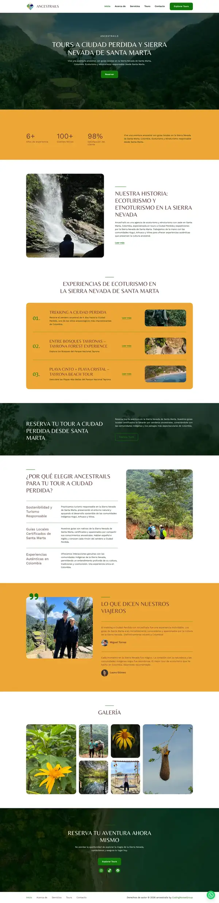
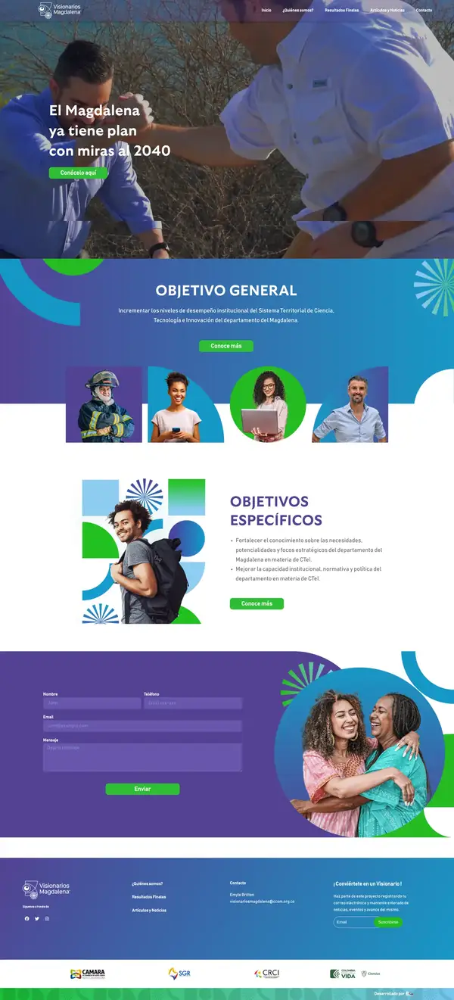
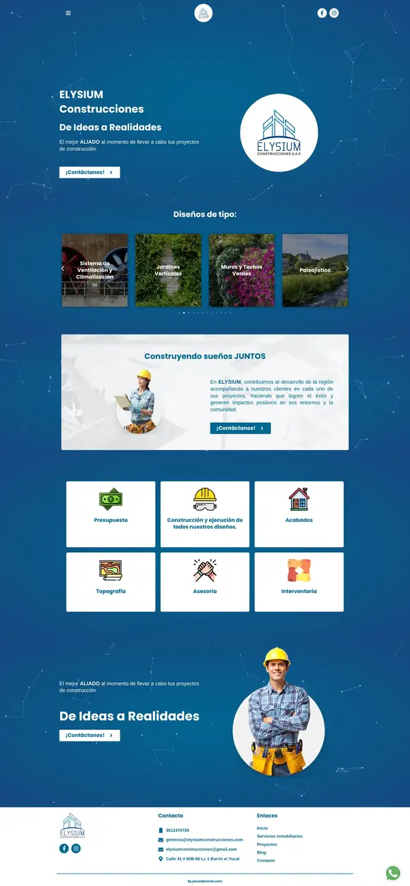
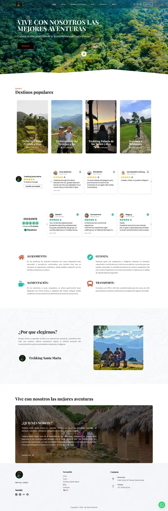
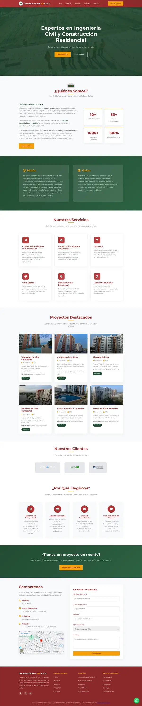
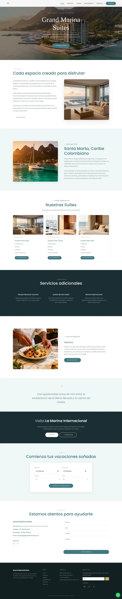
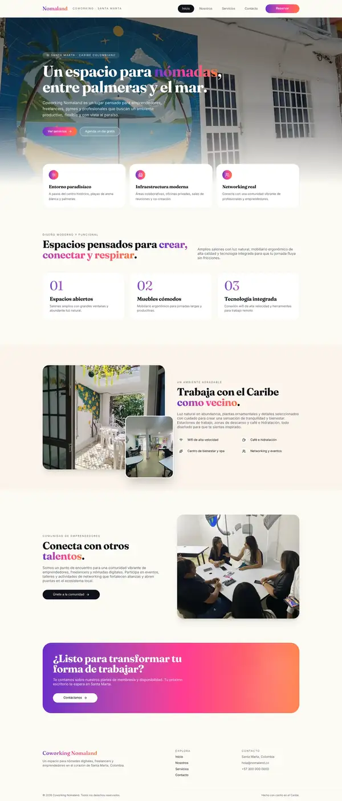
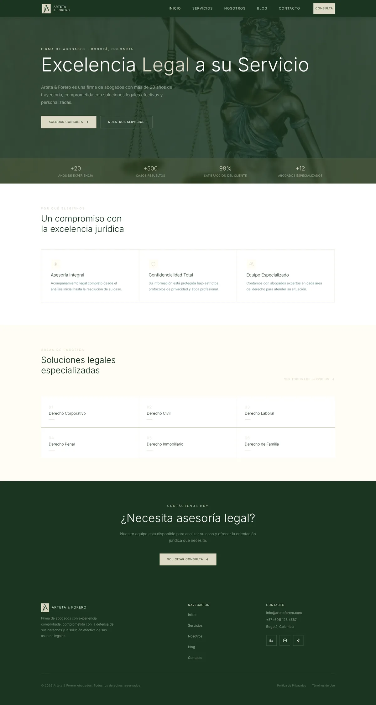
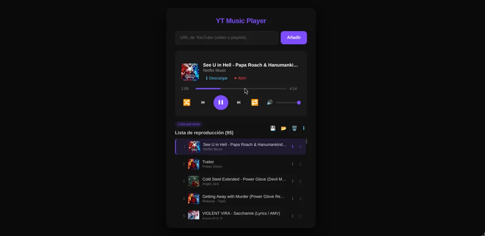
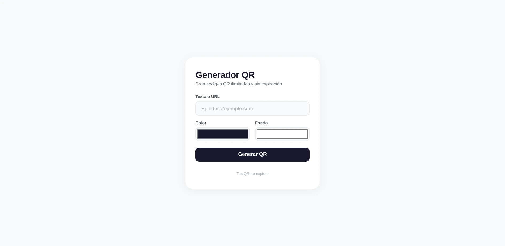

Mi Portafolio
Una selección de proyectos web y de inteligencia artificial organizados por categorías. Soluciones escalables, rápidas e inteligentes.

Clientes CMSAncesTrails
Agencia de ecoturismo y etnoturismo especializada en tours a Ciudad Perdida y expediciones por la Sierra Nevada de Santa Marta. Trabajo directo con comunidades Kogui, Arhuaco y Wiwa.
Ver Proyecto
Clientes CMSVisionarios Magdalena
Plataforma del Sistema Territorial de Ciencia, Tecnología e Innovación del Magdalena. Portal institucional con información sobre el plan de desarrollo departamental con miras al 2040.
Ver Proyecto
Clientes CMSElysium Construcciones
Sitio corporativo para empresa de diseño, arquitectura y construcción. Portal inmobiliario con galería de proyectos, login de clientes y servicios especializados de ingeniería.
Ver Proyecto
Clientes CMSTrekking Santa Marta
Operador turístico con rutas exclusivas en la Sierra Nevada. Sistema de reservas en línea, tours a Ciudad Perdida y experiencias de montaña con guías locales certificados.
Ver Proyecto
Clientes CodeConstrucciones HF S.A.S.
Landing page corporativa para empresa de ingeniería civil y construcción residencial en Barranquilla. Catálogo de proyectos destacados, servicios especializados y sistema de cotización.
Ver Proyecto
Proyectos CodeGrand Marina Suites
Sitio web para complejo de apartasuites frente al mar en Santa Marta. Diseño moderno con galería interactiva, catálogo de suites y sistema de reservas integrado.
Ver Proyecto
Proyectos CodeCoworking Nomaland
Sitio web para espacio de coworking en Santa Marta dirigido a nómadas digitales. Diseño fresco con secciones de servicios, membresías y comunidad de emprendedores.
Ver Proyecto
Proyectos CodeArteta & Forero
Sitio web corporativo para firma de abogados en Bogotá con más de 20 años de trayectoria. Sistema de agendamiento de consultas en línea y presentación de áreas de práctica.
Ver Proyecto
Proyectos CodeYT Music Player
Reproductor de música basado en YouTube. Agrega videos, crea listas de reproducción personalizadas y disfruta de tu música favorita desde una interfaz limpia y funcional.
Ver Proyecto
Proyectos CodeGenerador QR
Generador de códigos QR personalizados con opciones de color, logo y tamaño. Interfaz moderna y responsive para crear QR al instante.
Ver Proyecto¿Tienes una idea innovadora?
Escríbeme para estructurar un sitio dinámico, optimizar el rendimiento técnico de tu web o implementar automatizaciones y agentes de Inteligencia Artificial a la medida.
Iniciar conversación →